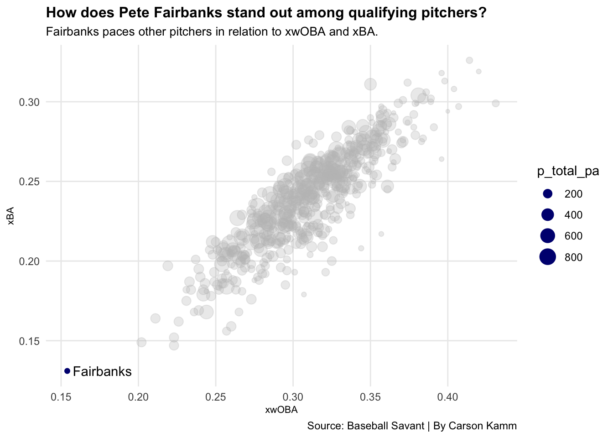

Is Pete Fairbanks The Most Underrated Pitcher in Baseball?
baseball
pitchers
rays
Author
Carson Kamm
Published
April 16, 2023
Pete Fairbanks made his long-awaited return from the injured list on July 17, 2022. Viewed by the Tampa Bay Rays and their fans as an essential piece to the back of the bullpen, there was lots of anticipation surrounding his return. The excitement surrounding his return died down following his first two appearances, where he surrendered three earned runs on four hits, including a home run.
After those two outings, however, Fairbanks began a dominant stretch that has continued into the 2023 season up to this point. Since his third appearance of 2022, Fairbanks has gone 26 consecutive innings without allowing a run with a strikeout-to-walk ratio of 37-3, and just 11 hits allowed. It’s an unbelievable stretch that finally put Fairbanks on the radar among some fans of baseball.
Code
library(tidyverse)library(ggrepel)stats <-read_csv("stats.csv")fairbanks <- stats %>%filter(last_name =="Fairbanks")ggplot() +geom_point(data=stats,aes(x=xwoba, y=xba, size=p_total_pa),color="grey",alpha=.3) +labs(title="How does Pete Fairbanks stand out among qualifying pitchers?", subtitle="Fairbanks paces other pitchers in relation to xwOBA and xBA.", x="xwOBA", y="xBA", caption="Source: Baseball Savant | By Carson Kamm") +geom_point(data=fairbanks,aes(x=xwoba, y=xba, size=p_total_pa),color="navy") +theme_minimal() +theme(plot.title =element_text(size =12, face ="bold"),axis.title =element_text(size =8),plot.subtitle =element_text(size =10),panel.grid.minor =element_blank() ) +geom_text_repel(data=fairbanks,aes(x=xwoba, y=xba, label=last_name) )

Fairbanks was an outlier far and away from other pitchers in 2022, but it’s important to consider his limited workload when gauging his high-level performance. With that being said, predictive metrics labeled him as the best pitcher in Major League Baseball last season. Fairbanks’ performance was rewarded, as the Rays signed him to a three-year contract extension to secure his arbitration seasons.
Fairbanks led every predictive statistic publicly available via Baseball Savant. Not shown in this graphic was xISO, where Fairbanks also had the lowest predicted value among qualifying pitchers. Possessing the lowest value in five predictive categories demonstrates great performance and probable sustainability.
In 2022, Fairbanks utilized a fastball and slider to neutralize opposing lineups. It’s hard for pitchers with just two pitch types to maintain effectiveness without their pitches having unique qualities, and, unsurprisingly, Fairbanks had two excellent pitch types that played off one another.
Code
library(tidyverse)library(gt)breakstats <-read_csv("breakstats.csv") breakstats$MY <-paste(breakstats$first_name, breakstats$last_name)breakstats %>%select(MY, ff_avg_break_z, sl_avg_break_z) %>%rename(Name = MY) %>%rename(FastballVBreak = ff_avg_break_z) %>%rename(SliderVBreak = sl_avg_break_z) %>%top_n(10, wt=FastballVBreak) %>%arrange(desc(FastballVBreak)) %>%gt() %>%cols_label(FastballVBreak ="Fastball V-Break",SliderVBreak ="Slider V-Break" ) %>%tab_header(title ="How is Pete Fairbanks so effective with just two pitches?",subtitle ="Fairbanks has a unique rising fastball that's complimented by one of the sharpest sliders in the league." ) %>%tab_style(style =cell_text(color ="black", weight ="bold", align ="left"),locations =cells_title("title") ) %>%tab_style(style =cell_text(color ="black", align ="left"),locations =cells_title("subtitle") ) %>%tab_source_note(source_note =md("**By:** Carson Kamm | **Source:** Baseball Savant") ) %>%tab_style(style =list(cell_fill(color ="navy"),cell_text(color ="white") ),locations =cells_body(rows = Name =="Pete Fairbanks" ) )
How is Pete Fairbanks so effective with just two pitches?
Fairbanks has a unique rising fastball that's complimented by one of the sharpest sliders in the league.
Name
Fastball V-Break
Slider V-Break
Pete Fairbanks
-7.5
-44.4
Felix Bautista
-8.2
-39.1
Tim Mayza
-9.4
-30.6
Ryan Helsley
-9.5
-32.2
James Karinchak
-9.5
NA
Matt Bush
-10.0
NA
Javy Guerra
-10.0
-29.4
Liam Hendriks
-10.1
-30.7
Dylan Cease
-10.3
-35.0
Gerrit Cole
-10.5
-34.2
Josh Sborz
-10.5
-35.0
By: Carson Kamm | Source: Baseball Savant
Fairbanks had the lowest average vertical break on his four-seam fastball among qualifying pitchers in 2022. Lower vertical break creates perceptive issues for hitters, who are accustomed to a much steeper break. Combining his rising fastball with a slider that drops more than normal creates trouble for opposing lineups. On top of that, Fairbanks has been working on a low-usage splitter this season to further keep hitters off-balance.
Pete Fairbanks has been one of the most effective pitchers over the last two seasons, yet continues to be unheard of among most baseball fans. Pending health and other circumstances, his success last season should prove to not be a fluke this season, and I expect his newly-added splitter to add to his dominance late in games.